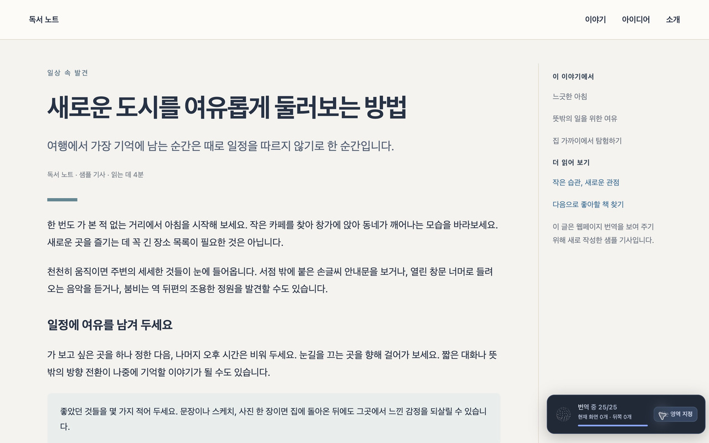

웹페이지를 자연스러운
한국어로 읽으세요.
GPT-6 Luna 기반 웹페이지 번역. 원래 페이지의 링크와 구성을 유지하면서, 현재 읽는 화면부터 번역합니다.
웹스토어 항목은 현재 초안입니다. Windows 배포 파일과 출시 전 테스트용 확장은 아래에서 다운로드할 수 있습니다. 스토어 설치 링크는 심사·게시 후 제공됩니다. ChatGPT Plus 또는 Pro 요금제와 GPT-6 Luna 모델 접근 권한이 필요합니다. 무료 계정은 지원하지 않습니다.
Windows
Windows 10/11 x64 · Node.js 포함
고정 ID 연결 · 별도 API 키 불필요
브라우저 확장 프로그램도 설치해야 합니다.
파일 SHA256 확인 · 현재 Windows 설치 파일은 코드 서명되지 않았습니다.
출시 전 테스트용 확장 ZIP · 웹스토어 게시 전에는 개발자 모드로 설치합니다.
실제 페이지에서 바로 번역

실제 확장 프로그램으로 직접 작성한 예시 문서를 번역해 촬영했습니다. 제품 UI를 합성하거나 번역 결과를 직접 입력하지 않았습니다.
설치는 두 단계입니다
- 브라우저에 확장 프로그램을 설치합니다. 게시 전 테스트는 확장 ZIP을 압축 해제한 뒤 manifest.json이 있는 폴더를 개발자 모드로 로드합니다.
- 로컬 보조 프로그램을 설치하고 본인 ChatGPT 계정을 연결합니다.
사용 전에 알아두세요
- 번역 대상 텍스트와 주변 문맥은 OpenAI로 전송됩니다.
- 상시 번역과 사이트 자동 번역을 켜면 새 콘텐츠도 전송될 수 있습니다.
- 확장 프로그램은 무료이지만 ChatGPT Plus 또는 Pro 요금제가 필요하며 해당 계정의 사용량 제한이 적용됩니다.
- PDF, 브라우저 내부 페이지 및 이미지 속 글자는 지원하지 않습니다.
Chrome 테스트용 최신 개정본
1.2.3: 기존 보안 수정, Google Chrome → Comet 선택 순서, 자동 ID 연결 유지, 설치·개인정보 안내 개선. 아이콘과 번역 엔진은 유지합니다.